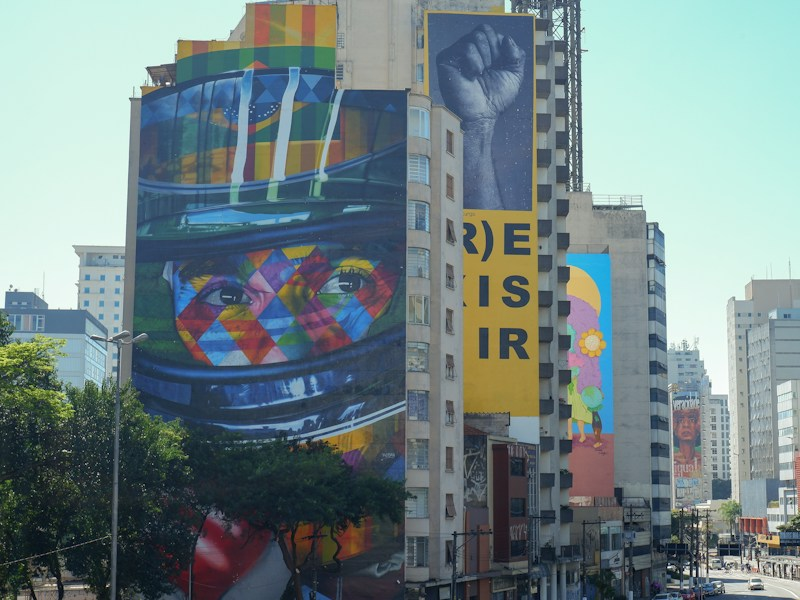
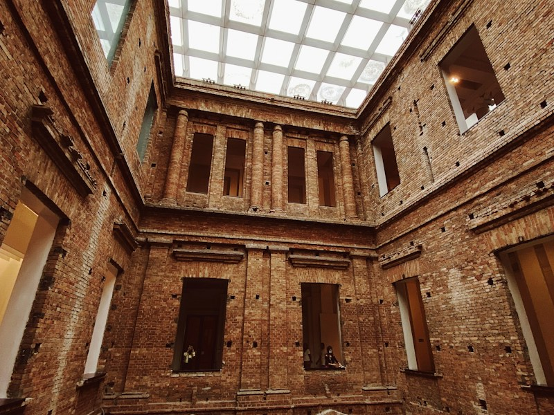
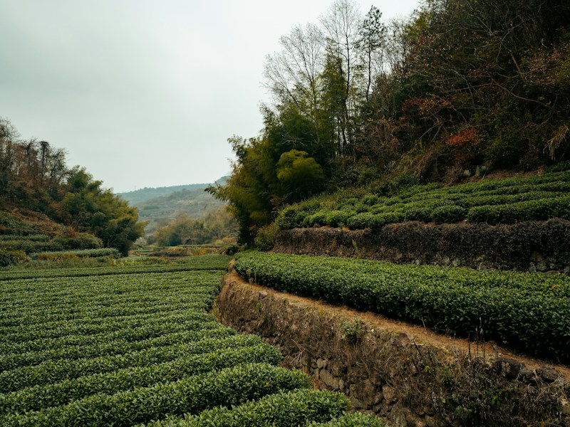
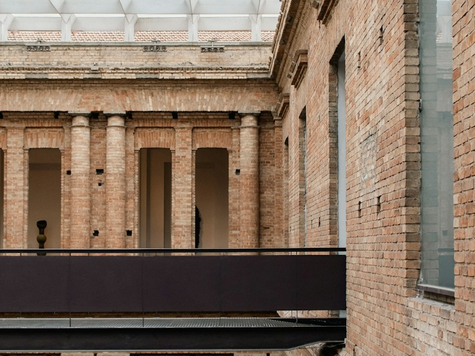
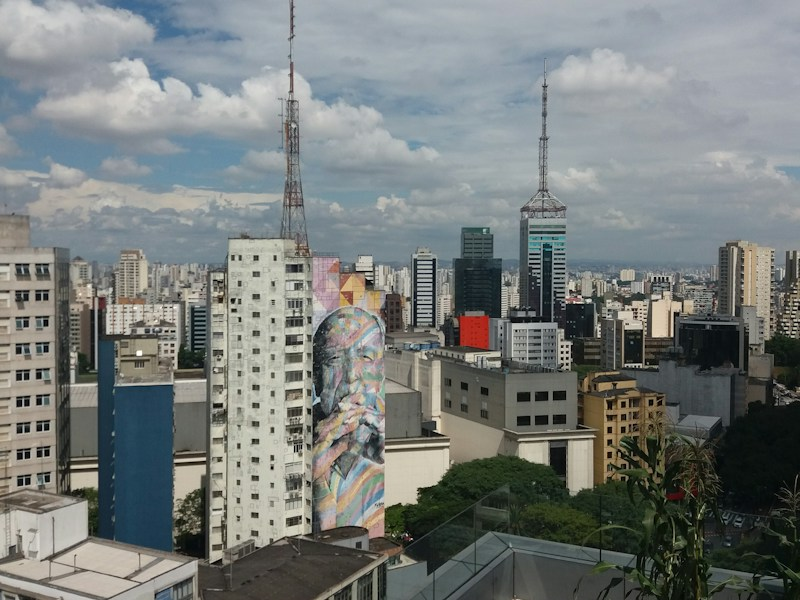
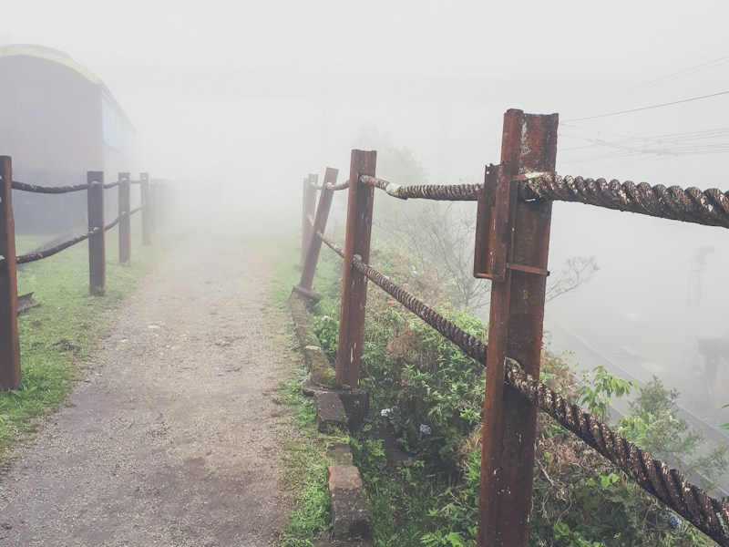
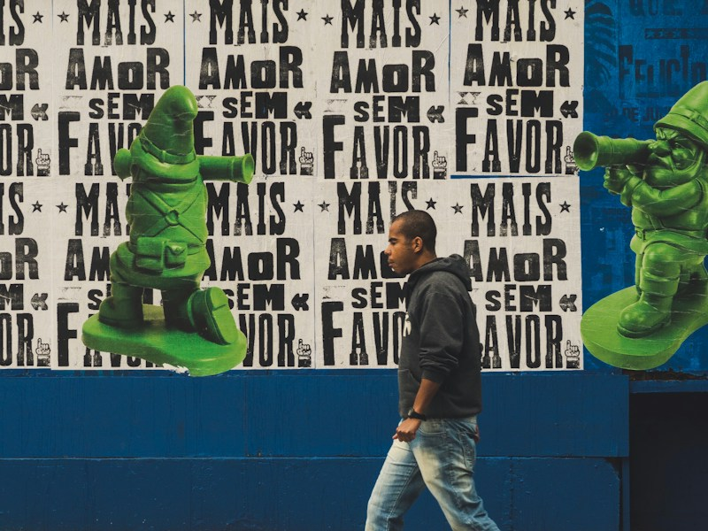
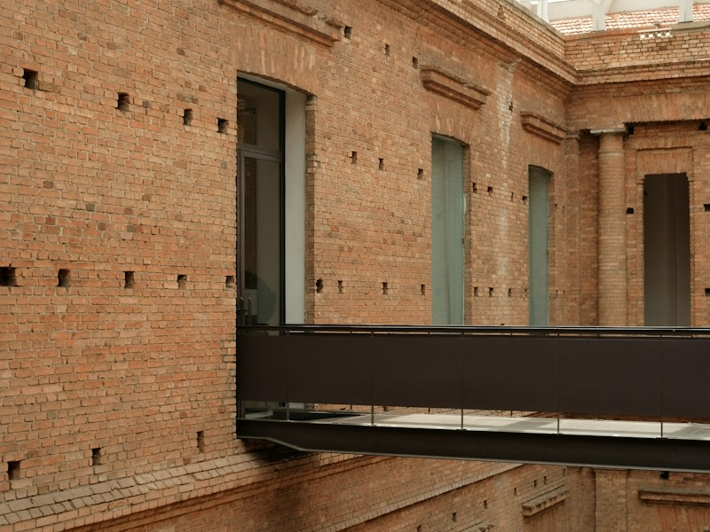

Feira Noturna de Barueri📍 Barueri — SP
Mais de 300 expositores, comidas do mundo inteiro, artesanato e shows ao vivo para curtir sem pressa.
Descobrir lugar
Feira Noturna de Barueri📍 Barueri — SP
Mais de 300 expositores, comidas do mundo inteiro, artesanato e shows ao vivo para curtir sem pressa.
Descobrir lugar
✦ Descoberta
BORADESCOBRIRSP?
9 lugares encontrados
Feira Noturna de Barueri📍 Barueri — SP
Mais de 300 expositores, comidas do mundo inteiro, artesanato e shows ao vivo para curtir sem pressa.
Descobrir lugar

Fábrica de Cultura — Capão Redondo📍 São Paulo — SP Centro cultural do extremo sul que quebra tudo com estúdio, oficinas e espaço para criação. Descobrir lugar
Centro Cultural Grajaú📍 São Paulo — SP Espaço cultural no extremo sul que transforma a cena artística da região — e é de graça. Descobrir lugar
Colônia — Parelheiros📍 São Paulo — SP Uma colônia japonesa no extremo sul de SP com ryokans, feiras de orgânicos e estradas de terra entre hortas. Descobrir lugar
SESC Interlagos📍 São Paulo — SP Complexo cultural premiado às margens da represa Guarapiranga — shows, exposições e vista épica. Descobrir lugar
Ônibus Turístico de São Paulo📍 São Paulo — SP Tour em ônibus de dois andares pela cidade. Patrimônio, Paulista e Ibirapuera, passeio pra ver SP por outros ângulos. Descobrir lugar
Estação da Luz → Paranapiacaba📍 Santo André — SP Vila vitoriana de 1900 no topo da Serra do Mar com névoa o ano todo. Isso não deveria existir. Descobrir lugar
Embu das Artes📍 Embu das Artes — SP Cidade colonial a 28km de SP com a maior feira de artesanato do país. O fim de semana perfeito. Descobrir lugar
Centro Cultural São Paulo📍 São Paulo — SP 47.000 m² de cultura de graça no centro da cidade: biblioteca, cinema, shows, teatro e exposições. Descobrir lugarNenhum lugar encontrado. Tente buscar por outro nome ou cidade.